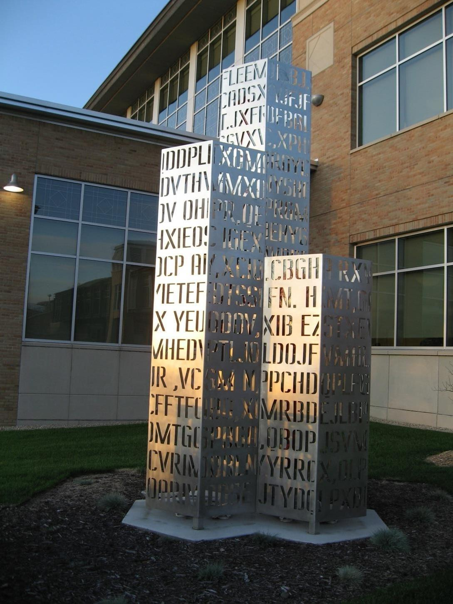
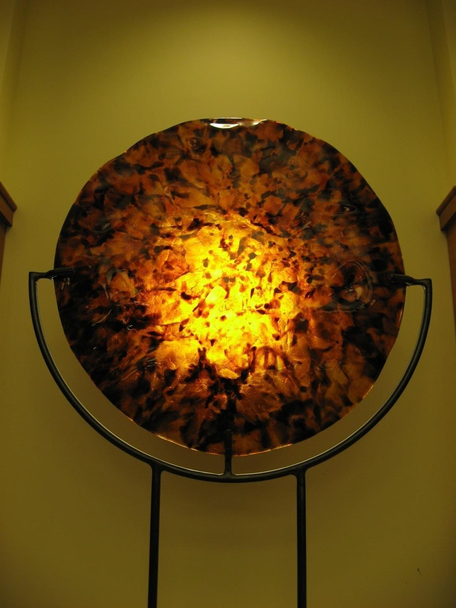
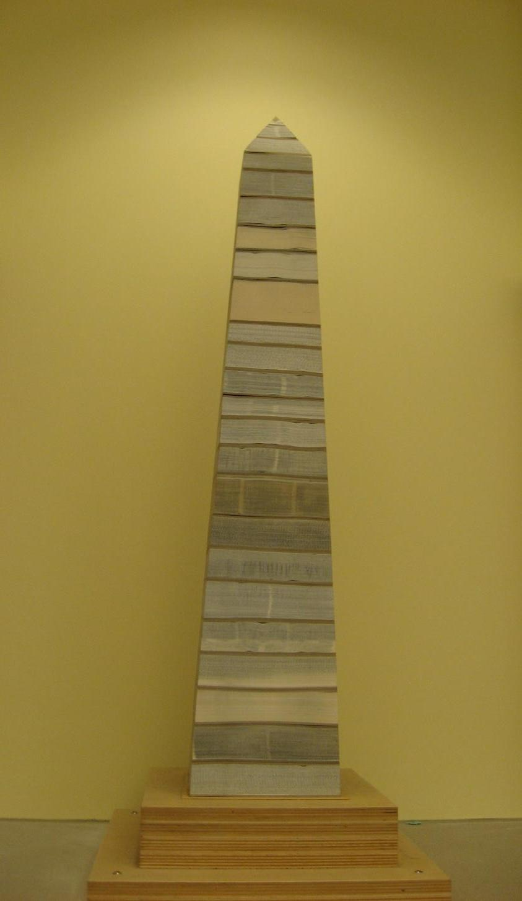
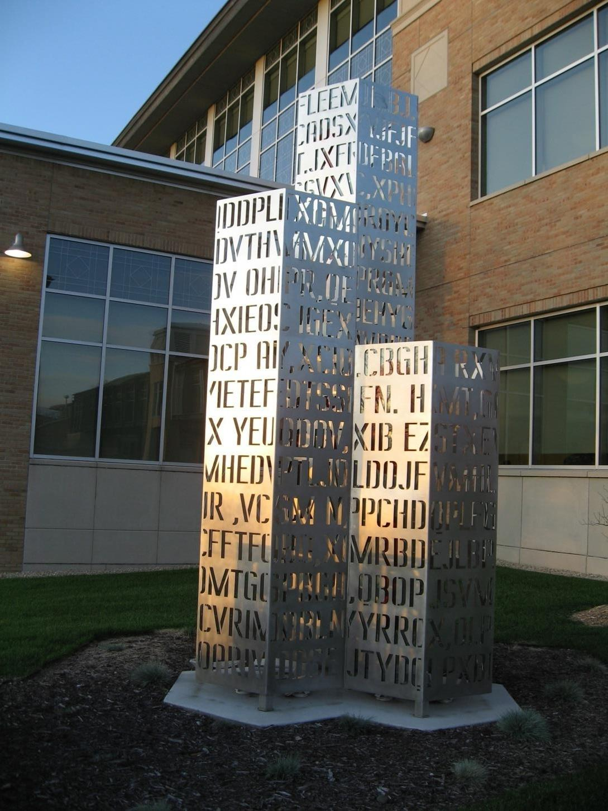
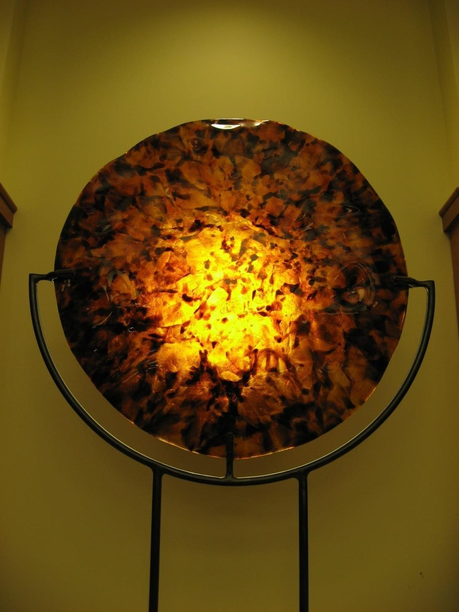
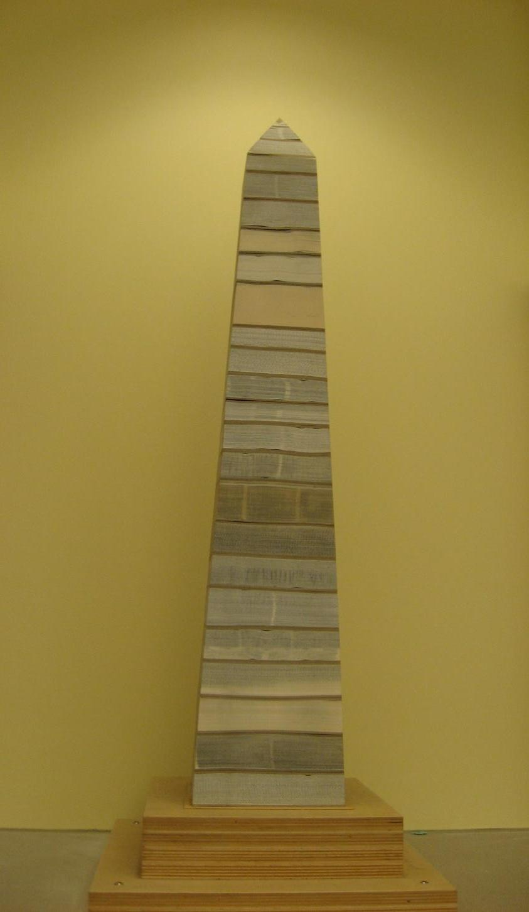

I still remember my first day of class at Metropolitan State. I parked in the lot (now the ramp) and was taking the skyway to the library’s third floor. Rounding the corner to the hallway with the slanted floor and windows on my right, I was drawn to the form on the opposite wall. A beautifully flowing, multi-colored mosaic, perfectly suited for the space and enhanced by the incoming light. Since then, having taken that same walk countless times, I have always admired the piece—fittingly named “Streaming.”
According to Erica Rasmussen, professor of studio arts and gallery director at Metro State, the “Streaming” piece’s creator, Sheryl Tuorila, is a local artist. She works out of Northeast Minneapolis, and is a former Metro State student. The mosaic is made of clay, glass, stone and ceramic tile—Tuorila makes the tile herself. She has created artwork for other major Twin Cities buildings and is presently working on an installation at the Minneapolis/St. Paul airport.
Rasmussen, an artist in residence and community faculty member for the first few years, is a resident faculty and has been involved in the arts at Metro State for almost 20 years now. Rasmussen also spearheads Metro State’s “Art Purchase Award,” which she created 14 years ago. Every fall, Rasmussen goes around the university to raise funds for the project. The competition is held in the spring, and is open to students, alumni and arts faculty. With the number dependent on the amount of funds raised, $1000 is given for each award. “Other universities have art purchase awards, but they’re not always to that dollar amount,” said Rasmussen. “It’s my belief that artists should be paid like any other professionals. It should be a significant sum, so that when somebody sells an artwork they can put some money in their pockets, buy some new art supplies, pay their bills.”
The Art Purchase Award competition also has another benefit. “It’s a great professional development exercise for our students and alums,” says Rasmussen. “When they’re applying for the award, they’re learning to photograph and document their artwork, and go through the submission process, which is exactly what they’re going to do when they get out in the world. They’re going to have to approach galleries, apply for grants, all these things to get their artwork out in circulation,” she adds.
Rasmussen is also chairwoman of the Art Exhibition Committee at Metro State. Generally consisting of 8-10 members, the committee includes faculty, staff and students. “We like to involve people from different areas,” said Rasmussen. “They’re not always necessarily schooled in art, either, but they’re people that are interested in art here on campus.” This approach gives the committee broader, diverse perspectives when deciding which artwork to acquire.
The artwork for Metro State is essentially obtained three ways, two of them being donations and the Art Purchase Award. The third is called “Percent for Art.” Officially titled Minnesota Percent for Art in Public Places, this program allows state building projects to use up to one percent of construction budgets to commission artwork for the site. “This is a program that many states in the country have, but not all of them,” Rasmussen says, adding, “so we’re really lucky we have a great Percent for Art program.”
An example of this can be seen after exiting the skyway and looking to the wall on the right of Metro State’s new Science Center. Created by Amy Baur and Brian Boldon and titled “Light Waves after Thomas Young,” this dazzling piece was named after the scientist’s Double-Slit Experiment of 1803, which demonstrated that light travels in waves. The artwork also emphasizes the importance of making visible the invisible through scientific imaging, and utilizes digital images on bent, kiln-formed glass suspended on a stainless steel structure. Some of the images displayed include microscopic enlargements of pollen and chemical crystals, as well as leaves and a common field cricket. These images also represent various scientific disciplines taught at Metro State.
Another piece, commissioned when the library was built, has a unique trait: it’s outdoors, on the library lawn. Designed by Minneapolis artist Janet Lofquist, the gleaming glass and stainless steel structure is called “Infinite Library.” The artwork’s inspiration is from a short story by Jorge Luis Borges titled “The Library of Babel” and also from the role of Boolean logic in modern binary computers. It’s been suggested that the short story by Borges foreshadows cyberspace and its role in the future of the library.
Another piece with local, eastside roots sits atop the fireplace of the library’s first-floor study room. Mainly black and amber in color, this warm, vibrant glass artwork is called “Disc.” The artist, Dick Huss, has a glass-blowing shop just several blocks from campus. The library’s second-floor fireplace is home to what is called the “Metropolitan Obelisk.” The piece is made from books that artist John Marshall rescued from a trip to the landfill. He then carved and stacked the books into this fitting and novel (pun intended) piece of art.
Rasmussen herself is an artist, working in handmade paper. Creating mostly garments, some wearable and some sculptural, she also creates handmade books. “It’s very labor intensive, but I love it,” Rasmussen says, adding, “It’s meditative for me to make art.” She also speaks of one of her goals, which is “to put works of art in every underground classroom that we have [at Metro State], to bring in a little color and life.”
As Rasmussen puts it, “Art is a positive and welcome aspect of public space.” If one takes the time to look around, the hallways and classrooms of Metro State are proof of that.